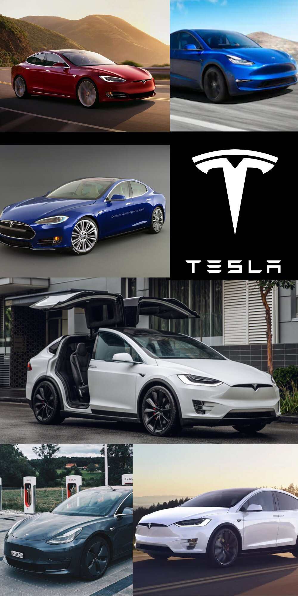
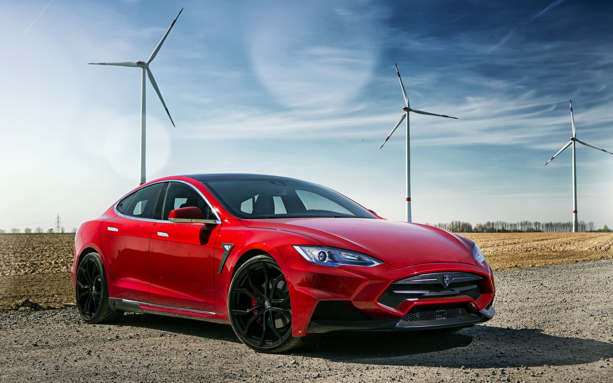
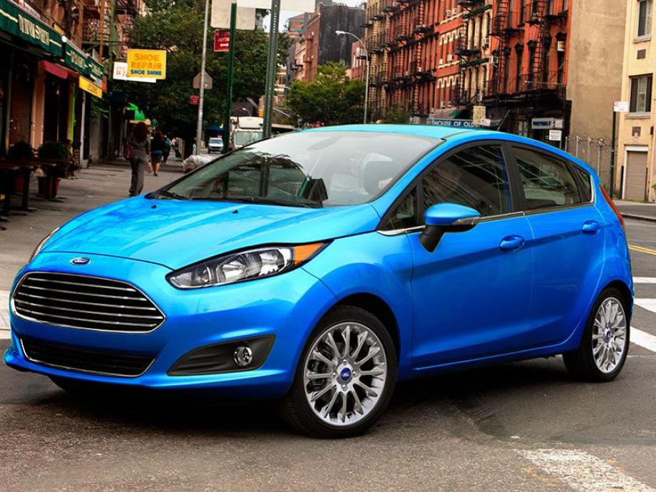
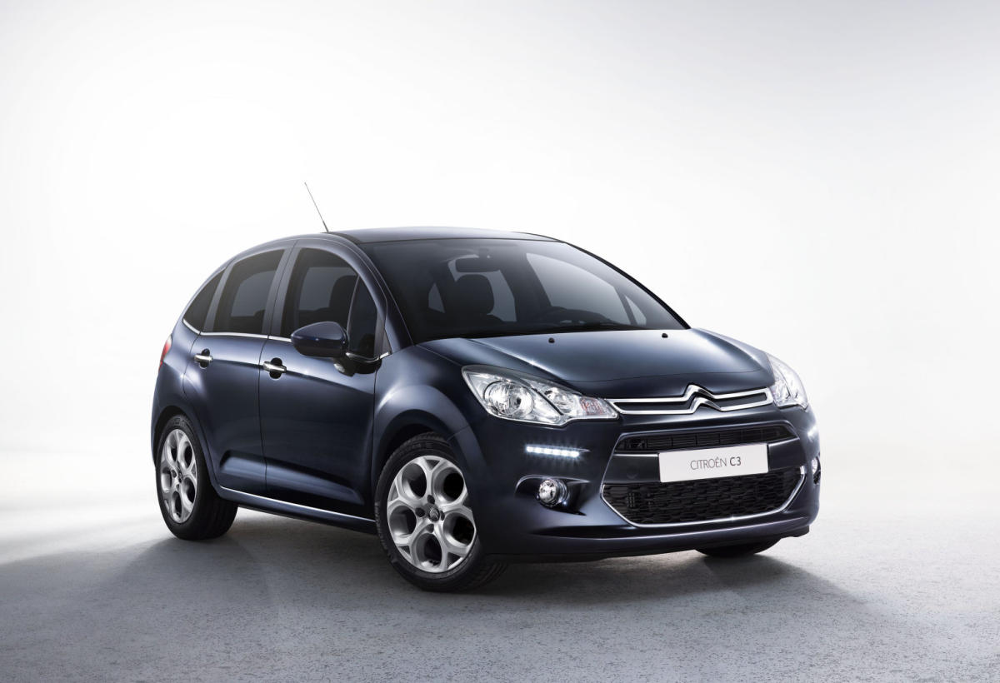
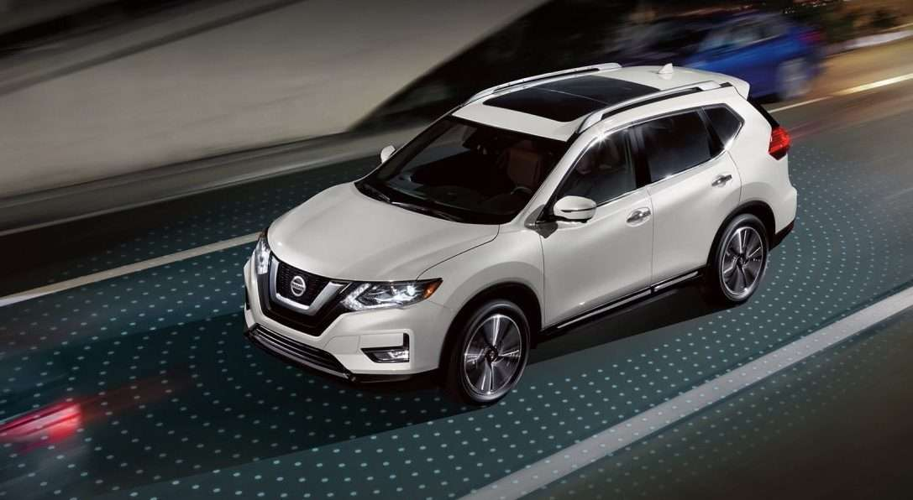
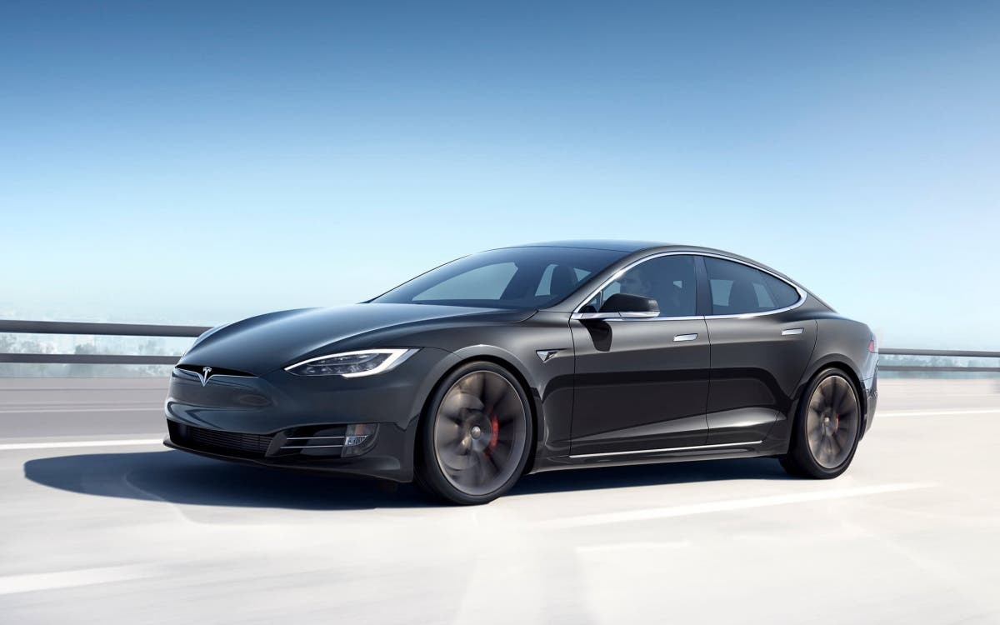
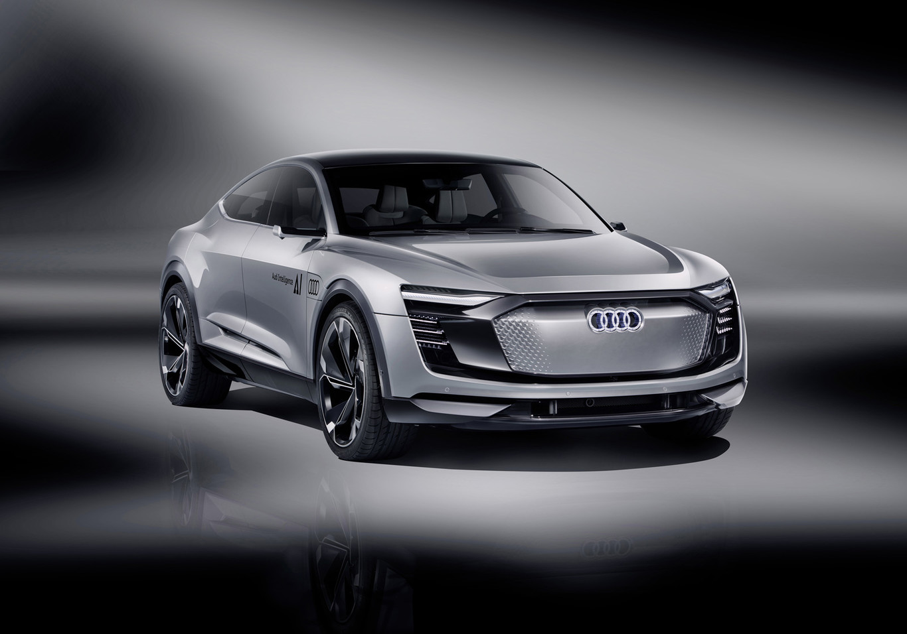
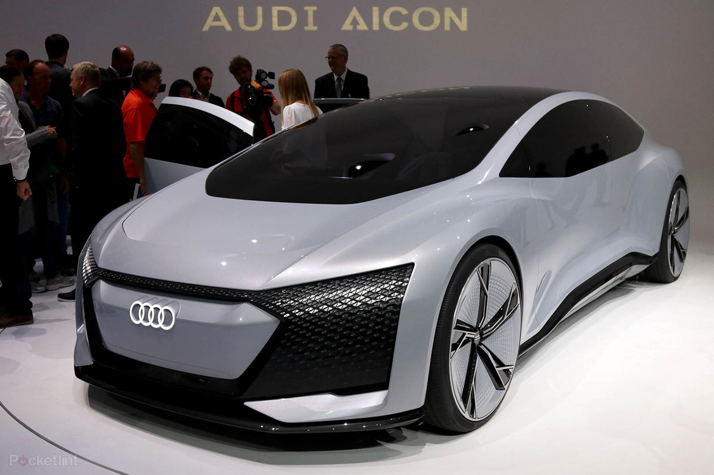

Un coche autónomo es aquel que cuenta con los sistemas informáticos necesarios para imitar las capacidades humanas en cuanto a la conducción, tanto por manejo como por control. A priori, se consideran vehículos autónomos aquellos que no necesitan conductor; sin embargo, el concepto sigue evolucionando y hay varios niveles de conducción autónoma.
Los coches autónomos son capaces de percibir el entorno que lo rodea y, en base al análisis del mismo, aplicar técnicas de conducción. En esto, sus ocupantes pueden elegir el destino al que se dirija el vehículo, pero no es necesario que tomen ningún tipo de acción sobre la conducción.
Tesla como empresa innovadora en este campo
De todas las marcas, Tesla es la que más ahínco está demostrando en ser la primera en ofrecer una verdadera conducción autónoma; sin embargo, también es la única que va en contra del resto de la industria en lo que respecta a la definición de "conducción autónoma"
-

-

-
Elon Musk
Elon Reeve Musk es un físico, emprendedor, inventor y magnate sudafricano, nacionalizado canadiense y estadounidense. Cofundador de PayPal, SpaceX, Hyperloop, SolarCity, The Boring Company, Neuralink y OpenAI. Es director general de SpaceX, de Tesla Motors, presidente de SolarCity y copresidente de OpenAI.r
Acerca de Elon Musk
Desde su creación en 2003, la misión de Tesla ha sido acelerar la transición del mundo hacia la energía sostenible. El primer producto Tesla, el coche deportivo Roadster, debutó en 2008, seguido del sedán Model S, que se presentó en 2012, y el SUV Model X, que se lanzó en 2015. El Model S recibió el premio Best Overall Car de Consumer Reports y ha obtenido el título de Ultimate Car of the Year de Motor Trend; el Model X, por su parte, fue el primer SUV en obtener calificaciones de seguridad de 5 estrellas en todas las categorías y subcategorías de las pruebas de la National Highway Traffic Safety Administration.

¿Como funciona el piloto automatico de Tesla ?
Ocho cámaras en el auto ofrecen una visión 360 grados alrededor del auto con un alcance de hasta 250 metros. Doce sensores ultrasónicos fueron actualizados y complementan esta visión, lo que permite la detección de objetos sólidos y blandos a cerca del doble de distancia y precisión del sistema anterior. Un radar delantero con procesamiento mejorado brinda datos adicionales sobre el mundo con una longitud de onda redundante que le permite ver a través de lluvia intensa, neblina, polvo e incluso el auto que antecede.
7 curiosidades colaterales que llegarán con los coches autónomos
1.Cambios en el mundo del motor/reparaciones. ...s
2.Las gasolineras son innecesarias
3.Menor consumo de tabaco Impuestos a la gasolina
4.Más demanda de electricidad
5.Menos accidentes
6.Ciudades más seguras para ciclistas
7.Cambios en los sistemas de seguridad
Inteligencia artificial en coches

La inteligencia artificial (IA) ya está presente en muchos de los automóviles
que conducimos. Y su integración en los coches irá creciendo en los
próximos años, pues es el elemento clave de los sistemas de seguridad, de
la futura conducción autónoma y de muchos servicios relacionados con la
movilidad.
Actualmente hay coches en el mercado con sistemas de inteligencia
artificial sencillos (sin capacidad de aprendizaje), empleados en asistentes
digitales y en algunas funciones de los sistemas de seguridad ADAS. Estos
últimos ya ofrecen una visión artificial a través de la cámara que montan
en el parabrisas, de otros sensores y de algoritmos de procesamiento de
imágenes. Gracias a ello pueden reconocer el entorno, identificar
situaciones de riesgo y detectar, por ejemplo, marcas viales, señales,
peatones o ciclistas
Los 6 niveles de los vehículos autónomos
El nivel 0 de los vehículos autónomos que aplica a los coches más comunes en la actualidad, no se automatizan las acciones del conductor.

Los vehículos autónomos de nivel 1 incluyen sistemas que controlan la dirección,
la velocidad y el frenado. Muchos modelos disponibles en la actualidad incluyen funciones de este nivel.

Los vehículos autónomos nivel 2 son capaces de tomar el control de algunos sistemas, aunque el conductor debe estar alerta por si se necesita su intervención.

En este nivel 3, los vehículos autónomos comienzan a analizar su entorno y son capaces de tomar decisiones. Utilizan sensores LIDAR para registrar lo que ocurre alrededor. Estos sensores combinan visión computarizada, cámaras, radar y localización.

Los vehículos autónomos en este nivel 4 se conducen sin necesidad de intervención de un conductor. Utilizan algoritmos de IA para entrenarse en las distintas condiciones y escenarios de manejo. Hay conexión mediante sistema WiFi en el coche.

En este nivel , los vehículos robotizados no requieren ningún tipo de control de conducción (ni volante ni pedales). Ya no hay conductor y las instrucciones se dan por comando de voz o mediante aplicaciones móviles.

David Rodríguez
Presiona mi avatar para saber mís de mí
Ándrea Heráldez
Presiona mi avatar para saber más de mí
Meyleen Martínez
Presiona mi avatar para saber más de mí
Antes no te olvides de contestar la encuesta para mejorar nuestra pagina
 }
Imprimir Contenido
}
Imprimir Contenido